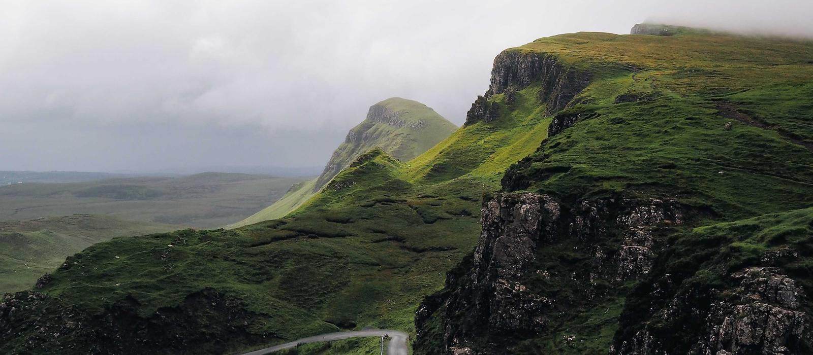
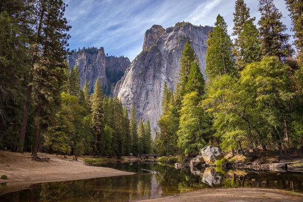
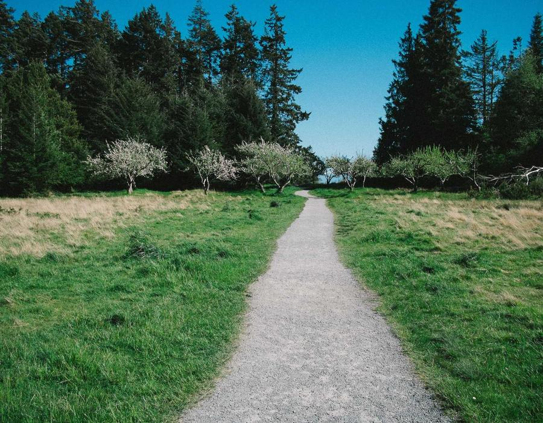

Fjord Overlook
A dramatic clifftop walk with sweeping views over the water.
- Hard
- 11 km
- 4–5 hrs

Trail guides, difficulty ratings and group hikes, all in one place. Pick a trail below or join one of our guided walks.
Browse trails
A dramatic clifftop walk with sweeping views over the water.

A shaded woodland trail that ends at a hidden waterfall.

A gentle riverside path, best walked early in the morning.

A high-altitude route with snow underfoot for much of the year.
| Date | Trail | Level | Spots left |
|---|---|---|---|
| Sat 3 Oct | Forest Falls | Easy | 6 |
| Sun 11 Oct | Misty Valley | Moderate | 3 |
| Sat 17 Oct | Fjord Overlook | Hard | 8 |
| Sun 25 Oct | Summit Ridge | Hard | 2 |

New trails and guided hikes, straight to your inbox. No spam, just walking.